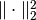
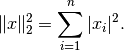
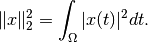

L2NormSquared¶
-
class
odl.solvers.functional.default_functionals.L2NormSquared(space)[source]¶ Bases:
odl.solvers.functional.functional.FunctionalThe functional corresponding to the squared L2-norm.
The squared L2-norm,
||x||_2^2, is defined as the integral/sum ofx^2.Notes
If the functional is defined on an -like space, the -functional is defined as

If the functional is defined on an
 -like space, the
-functional is defined as
-like space, the
-functional is defined as
Attributes
adjointAdjoint of this operator (abstract). convex_conjThe convex conjugate functional of the squared L2-norm. domainSet of objects on which this operator can be evaluated. grad_lipschitzLipschitz constant for the gradient of the functional gradientGradient operator of the functional. inverseReturn the operator inverse. is_functionalTrueif this operator’s range is aField.is_linearTrueif this operator is linear.proximalReturn the proximal factoryof the functional.rangeSet in which the result of an evaluation of this operator lies. Methods
__call__(x[, out])Return self(x[, out, **kwargs]).__eq__($self, value, /)Return self==value. _call(x)Return the squared L2-norm of x.derivative(point)Return the derivative operator in the given point. translated(shift)Return a translation of the functional.